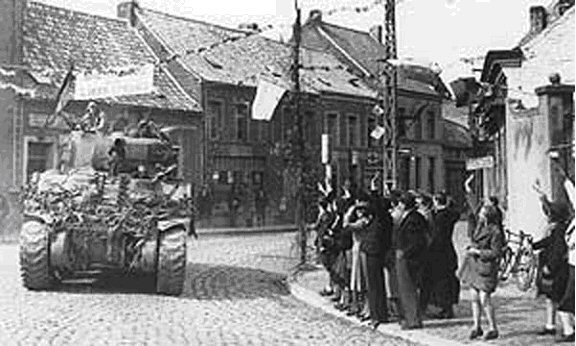

Wednesday, July the 14th, 2010
back to: title, date or indexes
During the 1980s, my mother wrote a memoir of her teenage years in Belgium during World War Two. The first version was written in longhand, and then she bought a typewriter, typed it up, and made copies for her children. As far as I know, she never submitted it for publication. The other day, my brother had a bright idea. Why don't we publish it on the internet?, he suggested. Although it is not written in diary format, I added my tuppenceworth to the effect that it would lend itself to appearing as a blog, so… voila!, here is Ghent In Wartime, a memoir in weekly instalments.
I encourage you all to read it.
